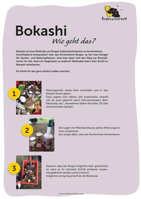

◈ MACHINE EXTRACTION: The content summaries are automatically parsed from the raw PDFs.
mikroBIOMIK.org ↗ is a society dedicated to the promotion of intrinsic curiosity and participation in science—with a focus on the invisible microbial world. They offer interactive learning, workshops, and open projects.

Bokashianleitung_print
Author: bodenschätzen.org
Format: PDF
Language: German
EN: This German-language zine provides a practical, step-by-step guide to the Bokashi method of fermenting household food waste. It positions Bokashi as an accessible, space-efficient alternative to traditional composting, suitable for both garden and balcony use, and emphasizes its ability to process all types of food scraps. The zine serves as a hands-on manual for urban gardeners and waste-reduction enthusiasts. DE: Dieses deutschsprachige Zine bietet eine praktische Schritt-für-Schritt-Anleitung für die Bokashi-Methode zur Fermentierung von Haushaltsabfällen. Es positioniert Bokashi als zugängliche, platzsparende Alternative zum traditionellen Kompostieren, geeignet für Garten und Balkon, und betont die Möglichkeit, alle Arten von Lebensmittelresten zu verarbeiten. Das Zine dient als praktisches Handbuch für städtische Gärtner und Enthusiasten der Abfallvermeidung.
EN: This zine, “Boden Besser Machen Basics,” serves as an introductory guide for German-speaking gardeners on the use of biochar (Pflanzenkohle) to improve soil health and sequester carbon. It contextualizes the practice within climate-positive gardening, explaining how biochar transforms gardens into CO2 sinks while mimicking the nutrient-rich properties of Terra Preta. The text’s practical use is to educate growers on producing and applying biochar to enhance soil structure, water retention, and nutrient binding. DE: Dieses Zine, „Boden Besser Machen Basics“, dient als Einführung für deutschsprachige Gärtner in die Nutzung von Pflanzenkohle zur Verbesserung der Bodengesundheit und zur Kohlenstoffspeicherung. Es kontextualisiert die Praxis innerhalb des klimapositiven Gärtnerns und erklärt, wie Pflanzenkohle Gärten in CO2-Senken verwandelt und gleichzeitig die nährstoffreichen Eigenschaften von Terra Preta nachahmt. Der praktische Nutzen des Textes besteht darin, Anbauer über die Herstellung und Anwendung von Pflanzenkohle zur Verbesserung von Bodenstruktur, Wasserrückhalt und Nährstoffbindung aufzuklären.
EN: This zine excerpt details a method for testing soil aggregate stability using an ice cube tray, adapted from Beste (2003)'s extended spade diagnosis. It provides a practical, low-cost field procedure for assessing soil health by quantifying the resilience of soil crumbs to water submersion. This would be useful for farmers, gardeners, and soil researchers conducting on-site ecological assessments. DE: Dieser Zine-Auszug beschreibt eine Methode zur Prüfung der Aggregatstabilität des Bodens unter Verwendung einer Eiswürfelschale, adaptiert aus der erweiterten Spatendiagnose nach Beste (2003). Es bietet ein praktisches, kostengünstiges Feldverfahren zur Beurteilung der Bodengesundheit durch die Quantifizierung der Widerstandsfähigkeit von Bodenkrümeln beim Eintauchen in Wasser. Dies ist nützlich für Landwirte, Gärtner und Bodenforscher, die ökologische Vor-Ort-Bewertungen durchführen.
Visual Soil Assessment (by Graham Shepherd et alii)
Author: Unknown
Format: PDF
Language: Bilingual/Mixed
EN: A practical guide for assessing soil health through visual indicators such as color, structure, and root growth. Ideal for farmers and gardeners to quickly evaluate soil quality without lab tests. DE: Ein praktischer Leitfaden zur Beurteilung der Bodengesundheit anhand visueller Indikatoren wie Farbe, Struktur und Wurzelwachstum. Ideal für Landwirte und Gärtner, um die Bodenqualität ohne Labortests schnell zu bewerten.
EN: A German-language guide on composting in windrows (Miete), covering aeration, moisture management, and turning schedules. Suitable for community gardens and small-scale farms. DE: Ein deutschsprachiger Leitfaden zur Kompostierung in Mieten mit Schwerpunkt auf Belüftung, Feuchtigkeitsmanagement und Umsetzplänen. Geeignet für Gemeinschaftsgärten und kleinbäuerliche Betriebe.
EN: A workshop logbook for soil observation and experiments, designed for educational settings. Includes protocols for soil sampling, compaction tests, and biodiversity recording. DE: Ein Workshop-Logbuch für Bodenbeobachtungen und Experimente, konzipiert für Bildungseinrichtungen. Enthält Protokolle zur Bodenprobenahme, Verdichtungstests und Biodiversitätserfassung.
EN: A beginner-friendly guide to hot composting at home, covering bin selection, ingredient layering, and troubleshooting. Emphasizes rapid decomposition for nutrient-rich compost. DE: Ein anfängerfreundlicher Leitfaden zur Heißkompostierung zu Hause, mit Schwerpunkten auf Behälterauswahl, Schichtung der Zutaten und Problemlösung. Betont schnelle Zersetzung für nährstoffreichen Kompost.
EN: A Spanish-language booklet on bokashi, a fermented organic fertilizer made with bran, molasses, and microbes. Explains production, application as soil amendment or compost accelerator. DE: Ein spanischsprachiges Heft über Bokashi, einen fermentierten organischen Dünger aus Kleie, Melasse und Mikroben. Erklärt Herstellung, Anwendung als Bodenverbesserer oder Kompostbeschleuniger.
EN: A German zine on radical pedagogy and 'letting knowledge grow', using urban gardening as a metaphor. Includes workshop formats for collaborative learning and knowledge sharing. DE: Ein deutsches Zine über radikale Pädagogik und 'Wissen wuchern lassen', mit urbanem Gärtnern als Metapher. Enthält Workshop-Formate für kollaboratives Lernen und Wissensaustausch.
EN: A bilingual English-German field logbook for soil and earth observation, used in workshops. Structured for recording soil profiles, moisture, temperature, and microbial activity. DE: Ein zweisprachiges (englisch/deutsch) Feld-Logbuch für Boden- und Erdbeobachtungen, verwendet in Workshops. Strukturiert zur Aufzeichnung von Bodenprofilen, Feuchte, Temperatur und mikrobieller Aktivität.
EN: A guide to vermicomposting with worms, focusing on bedding, feeding, and harvesting worm castings. Emphasizes microbial decomposition facilitated by earthworms. DE: Ein Leitfaden zur Wurmkompostierung mit Schwerpunkt auf Einstreu, Fütterung und Ernte von Wurmhumus. Betont die mikrobielle Zersetzung, die durch Regenwürmer unterstützt wird.
EN: This zine is a farmer's guide to vermicomposting, detailing the process and timeline for producing vermicompost and liquid percolate. It provides practical instructions for small-scale agricultural use. DE: Dieses Zine ist ein Bauernleitfaden zur Wurmkompostierung, der den Prozess und die Zeitrahmen für die Herstellung von Wurmkompost und flüssigem Perkolat beschreibt. Es bietet praktische Anweisungen für die landwirtschaftliche Nutzung in kleinem Maßstab.
EN: This zine summarizes a webinar on Bokashi, a fermentation method for kitchen waste. It covers origins and practical application for home gardening. DE: Dieses Zine fasst ein Webinar über Bokashi zusammen, eine Fermentationsmethode für Küchenabfälle. Es behandelt Ursprünge und praktische Anwendung für den Hausgarten.
EN: A visual flowchart infographic designed by LA Compost to help beginners choose the right composting system. It uses a decision-tree structure based on living situation, space, budget, and time availability. DE: Eine visuelle Flussdiagramm-Infografik von LA Compost, die Anfängern hilft, das richtige Kompostsystem auszuwählen. Sie verwendet eine Entscheidungsbaumstruktur basierend auf Wohnsituation, Platz, Budget und Zeitverfügbarkeit.
EN: A comprehensive, two-page tri-fold brochure by LA Compost detailing the technical and practical fundamentals of composting. It visually organizes the "Why" and "How" of composting, making complex biological processes accessible to beginners and community members. DE: Eine umfassende, zweiseitige dreifach gefaltete Broschüre von LA Compost, die die technischen und praktischen Grundlagen der Kompostierung detailliert beschreibt. Sie organisiert visuell das "Warum" und "Wie" der Kompostierung und macht komplexe biologische Prozesse für Anfänger und Gemeindemitglieder zugänglich.
ZINE - Composting A Dying World_ Revolution as an Ecosystem of Transformative Change
Author: Unknown
Format: PDF
Language: Bilingual/Mixed
EN: A profound and beautifully illustrated black-and-white zine by AJ Hawkins that uses the biology of composting as a metaphor for social revolution. It maps various decay organisms (fungi, bacteria, millipedes, termites) to specific archetypal roles necessary for transformative community change. DE: Ein tiefgründiges und wunderschön illustriertes Schwarz-Weiß-Zine von AJ Hawkins, das die Biologie der Kompostierung als Metapher für die soziale Revolution verwendet. Es ordnet verschiedene Fäulnisorganismen (Pilze, Bakterien, Tausendfüßler, Termiten) spezifischen archetypischen Rollen zu, die für transformative Veränderungen in der Gemeinschaft notwendig sind.
EN: This zine explains worm composting, a method using soil organisms to decompose organic waste. It's a practical guide for home composting. DE: Dieses Zine erklärt die Wurmkompostierung, eine Methode, bei der Bodenorganismen organische Abfälle zersetzen. Es ist ein praktischer Leitfaden für die Heimkompostierung.
EN: This zine is a training guide for Composting 101, defining composting as controlled aerobic decomposition. It is used for educational workshops. DE: Dieses Zine ist ein Trainingsleitfaden für Kompostierung 101, der Kompostierung als kontrollierte aerobe Zersetzung definiert. Es wird in Bildungsworkshops verwendet.
EN: A guide to soil and compost microscopy, detailing the compost food web and microbe profiles including bacteria, fungi, protozoa, nematodes, and microarthropods. Created by LA Compost with support from the Institute for Local Self Reliance, it serves as an educational resource for observing soil health. DE: Ein Leitfaden zur Mikroskopie von Boden und Kompost, der das Kompost-Nahrungsnetz und Mikrobenprofile wie Bakterien, Pilze, Protozoen, Nematoden und Mikroarthropoden beschreibt. Erstellt von LA Compost mit Unterstützung des Institute for Local Self Reliance, dient es als Bildungsressource zur Beobachtung der Bodengesundheit.